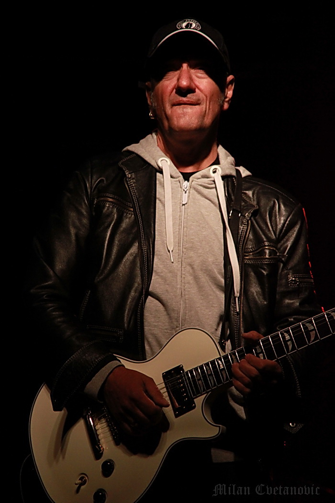
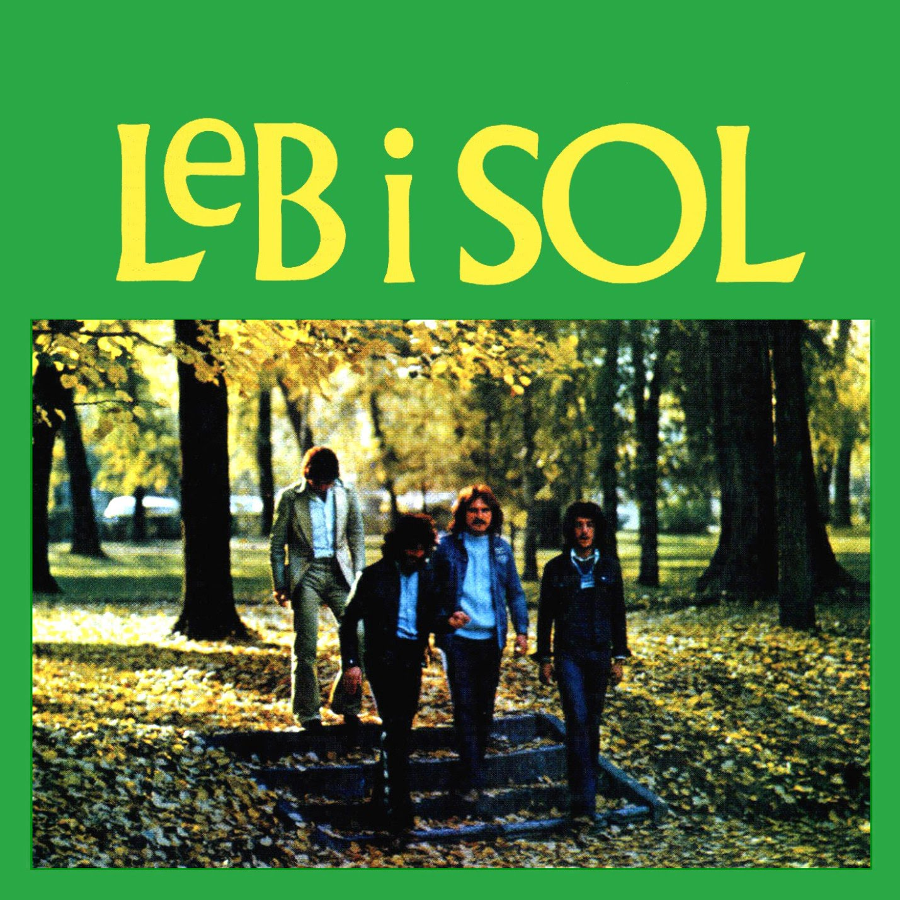

Vlatko Stefanovski is a Macedonian guitar virtuoso, who reached fame while playing in Macedonia's foremost folk-rock band, Leb i Sol ("Bread and Salt"). Allegedly, when Joe Satriani was asked if he was the best guitarist alive, he ansered "No, there is someone else in Macedonia." Like pretty much every other well known guitarist, he plays on a Fender Stratocaster.
 His band covered many folk songs throughout their career. The most famous of them is "Uci Me Majko, Karaj Me" (Teach me mother, scold me), which was sampled by Goran Bregovic for the soundtrack of Emir Kusturica's film Arizona Dream (linked below)